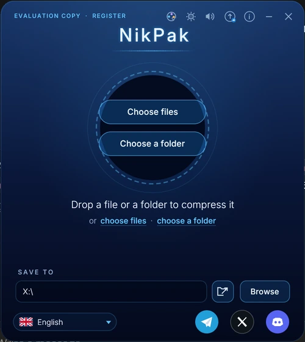
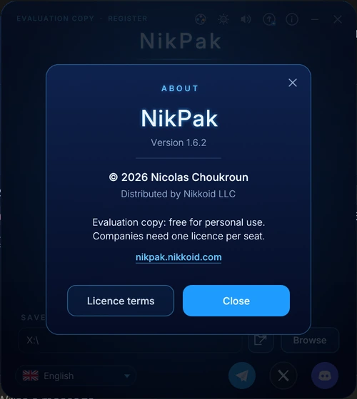
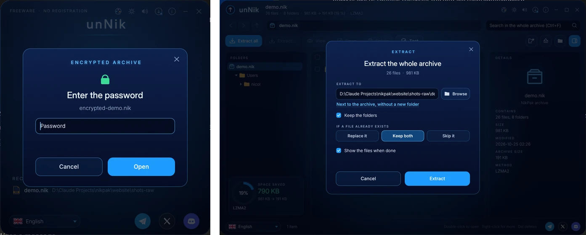
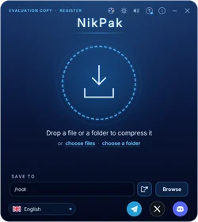
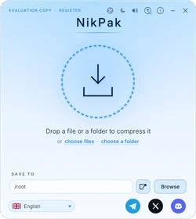
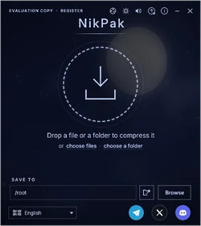
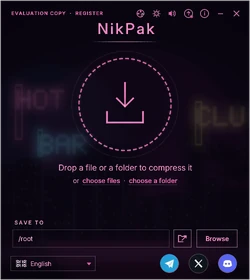
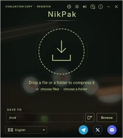
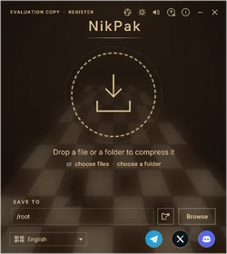
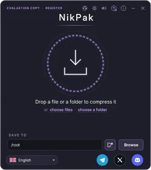

Возможности
Что находится внутри NikPak и формата .nik — простыми словами.
Устойчивость к квантовым атакам
Квантовые компьютеры угрожают криптографии с открытым ключом: алгоритм Шора взламывает RSA и эллиптические кривые. NikPak не использует ни то, ни другое. Его шифрование только симметричное, 256-битное, что даёт около 128 бит стойкости даже против алгоритма Гровера.
Архивы, перехваченные сегодня, нельзя будет просто расшифровать потом на квантовом компьютере («собрать сейчас, расшифровать позже»). Главное по-прежнему — надёжность вашего пароля, а Argon2id делает его подбор дорогим.
Работа с медиафайлами
NikPak смотрит на содержимое файла, а не на его расширение. Звук WAV и AIFF, музыка ProTracker MOD и изображения BMP распознаются и обрабатываются специально созданными для них фильтрами.
Каждый медиафайл проходит испытание: пробуются NAC, Shuffle, Shuffle+Delta и MED, и сохраняется самый компактный результат. Если ни один фильтр не помогает, файл сжимается обычным способом, поэтому фильтр никогда не увеличивает архив.
- NAC — аудиокодек NikPak без потерь: линейное предсказание и стереодекорреляция, на уровне FLAC -8.
- Самопроверка: каждый блок NAC декодируется повторно во время сжатия и сравнивается с оригиналом.
- Shuffle и Shuffle+Delta для отсчётов и пикселей, а также отдельная обработка файлов ProTracker MOD.
- Результаты по сравнению с RAR 7 -m5: фотографии BMP меньше на 38,8 %, стереомузыка — на 14,6 %, файлы MOD — на 13,3 %.
Офисные документы, PDF и gzip
Файлы docx, xlsx, pptx, odt, ods, epub, jar, zip, pdf и gz хранят содержимое в потоках Deflate, которые обычные архиваторы уже не могут уменьшить. На уровнях -m4 и -m5 NikPak декодирует эти потоки, гораздо лучше сжимает исходные данные и при извлечении восстанавливает исходный файл бит в бит. На 60 офисных файлах архив на 31,7 % меньше, чем у 7-Zip -mx9.
Уровни сжатия
Уровни с -m1 по -m4 используют непрерывный многопоточный поток Zstandard с окном 128 МиБ и поиском дальних совпадений на -m4. Максимальный уровень -m5, используемый по умолчанию, строит архив из нескольких движков: LZMA2 для двоичных данных и PPMd для текста, выбираемых пробным сжатием, с сортировкой файлов по типу.
| Уровень | Что делает |
|---|---|
-m0 | Хранение: без сжатия |
-m1 | Самый быстрый |
-m2 | Быстрый: выбор, когда скорость важнее размера |
-m3 | Хороший |
-m4 | Высокий: добавляет пересжатие Deflate для офисных файлов, PDF и gzip |
-m5 | Максимальный, по умолчанию: LZMA2 и PPMd, выбранные пробным сжатием |
Шифрование
Зашифрованные архивы используют Argon2id, чтобы превратить пароль в ключ. Каждая попытка требует 64 МиБ памяти, поэтому подбор паролей на видеокартах становится дорогим. Затем данные шифруются XChaCha20-Poly1305 аутентифицированными блоками по 64 КиБ.
- Имена, размеры, даты и права доступа файлов всегда зашифрованы.
- Перестановка, обрезка и изменение заголовков обнаруживаются криптографически.
- Пароль не задан? NikPak создаст надёжный: 24 символа, около 139 бит.
- Никаких «чёрных ходов»: утерянный пароль не сможет восстановить никто.
| NikPak | RAR 5 | 7-Zip | |
|---|---|---|---|
| Шифр | XChaCha20-Poly1305 | AES-256-CBC | AES-256 |
| Аутентификация | Да | Нет | Нет |
| Получение ключа из пароля | Argon2id, требует много памяти | PBKDF2-HMAC-SHA256 | SHA-256, не требует много памяти |
| Имена файлов скрыты | Всегда | Только с -hp | Только с -mhe |
Безопасность по замыслу
- Извлечение никогда не записывает файлы за пределами папки назначения (защита от zip-slip).
- Символические ссылки отклоняются, биты setuid снимаются.
- У каждого декодера строгие ограничения: вредоносный архив не может исчерпать память.
- Архивы записываются атомарно: сбой никогда не оставляет недописанный файл.
- CRC32 каждого файла, конечная метка с числом записей и программа на Rust с безопасной работой с памятью.
Две программы, один стиль
NikPak создаёт архивы из простого окна, куда перетаскиваются файлы; unNik открывает, просматривает и извлекает их. Обе программы используют общий язык, звуки и настройки, а одна кнопка переключает между ними.



Командная строка
NikPak следует синтаксису RAR (a, x, e, l, v, lb, t, p, d, mt), с опциями RAR и zip, предсказуемыми кодами выхода и -help, описывающим каждую опцию. Пароль может браться из переменной окружения, а фронтенды вроде Total Commander могут управлять им как rar.exe. Технический →
Скины
55 скинов для NikPak и unNik: 41 из Nikkomander и 14 нарисованных нами. Выбор сохраняется и общий для обеих программ; можно импортировать свои скины .skin.json. Все скины →








Где RAR пока впереди
- Записи для восстановления, позволяющие починить повреждённый архив
- Многотомные и самораспаковывающиеся архивы
- Добавление и замена файлов в существующем архиве
- Десятилетия практического использования и миллионы существующих файлов .rar
План развития
- Записи для восстановления: чётность Рида — Соломона для восстановления повреждённых архивов.
- Многотомные архивы и обновление: разбиение больших архивов, добавление и замена файлов.
- Обмен с помощью открытых ключей: гибрид X25519 и ML-KEM, безопасный, пока держится хотя бы один из них.
- Больше медиафильтров: звук с плавающей точкой, трекеры XM/S3M/IT, пересжатие PNG, TGA и TIFF.
- ZIP и RAR в unNik: открывать распространённые форматы в unNik, чтобы NikPak был единственным нужным архиватором. (Меню файлового менеджера появилось в 1.5.5.)
- Более быстрый максимальный уровень: многопоточные LZMA2 и PPMd, дедупликация, фильтр для исполняемых файлов.
- Внешний аудит безопасности криптографии и распаковщика.